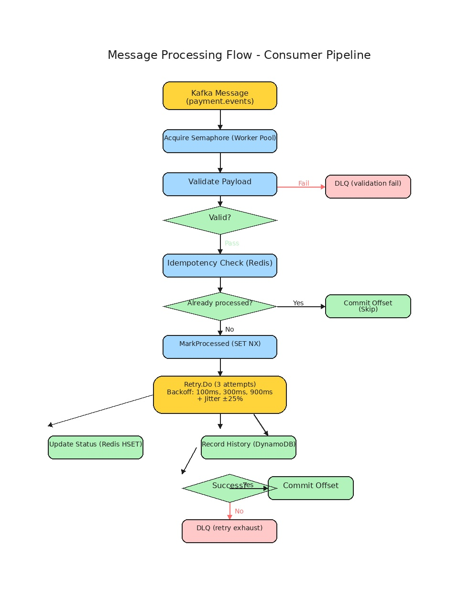

Kafka Payment Consumer
Componente central de processamento de eventos de pagamento.
O que é
O Kafka Payment Consumer é o componente central do sistema de processamento de pagamentos. Ele consome eventos do tópico Kafka payment.events, valida, processa e persiste os dados em Redis e DynamoDB.
Por que existe
Em um sistema distribuído de pagamentos, eventos de transação financeira são publicados em um message broker (Kafka) por sistemas produtores (API de pagamentos, gateways externos). O Consumer é responsável por processar esses eventos de forma assíncrona, garantindo:
- Validação de schema e regras de negócio
- Idempotência para evitar processamento duplicado
- Persistência do status atual (Redis) e histórico completo (DynamoDB)
- Resiliência com retry e Dead Letter Queue
- Observabilidade com tracing distribuído e métricas
Como funciona
Fluxo de Processamento
Mensagem recebida do Kafka
│
▼
┌───────────────────┐
│ 1. Validação │ ← go-playground/validator
│ do Payload │ schema + regras de negócio
└───────┬───────────┘
│
┌────┴────┐
│ Inválido│ → DLQ (erro permanente)
└────┬────┘
│ Válido
▼
┌───────────────────┐
│ 2. Idempotência │ ← Redis: `idempotency:<payment_id>`
│ Check │ SET NX + TTL 24h
└───────┬───────────┘
│
┌────┴────┐
│ Já proc.│ → Commit (skip)
└────┬────┘
│ Novo
▼
┌───────────────────┐
│ 3. Status Redis │ ← `payment:<payment_id>` (HSET)
│ Update │ TTL configurável (default 7 dias)
└───────┬───────────┘
│
▼
┌───────────────────┐
│ 4. Histórico │ ← DynamoDB: tabela `payment_history`
│ DynamoDB │ Chave: payment_id + timestamp
└───────┬───────────┘
│
┌────┴────┐
│ Sucesso│ → Commit offset
└────┬────┘
│ Falha
▼
┌───────────────────┐
│ 5. Retry (3x) │ ← Backoff: 100ms, 300ms, 900ms
│ com jitter │ ±25% para evitar thundering herd
└───────┬───────────┘
│
┌────┴────┐
│ Exaurido│ → DLQ (tópico `payment.events.dlq`)
└─────────┘

Pipeline de processamento: validação, idempotência, status update, histórico DynamoDB, retry com backoff e Dead Letter Queue.
Diagrama Interativo do Pipeline
Pipeline de processamento do Consumer com decisões. Verde = sucesso, Amarelo = retry, Vermelho = erro/DLQ, Azul = processamento.
Diagrama de sequência UML — Processamento com validação, idempotência, retry e DLQ. Dividido em 3 atos.
Componentes Internos
1. Handler de Mensagens (internal/consumer/handler.go)
Implementa a interface sarama.ConsumerGroupHandler. Responsável por:
- Gerenciar o worker pool (semáforo com
WORKER_COUNTgoroutines) - Criar spans de tracing para cada mensagem
- Orquestrar o fluxo: validação → idempotência → processamento → retry/DLQ
- Registrar métricas
type Handler struct {
validator validator.Validator
idempotency idempotency.Checker
status status.Updater
history history.Recorder
retry retry.Handler
dlq dlq.Producer
semaphore chan struct{} // Worker pool
// ... métricas e tracing
}2. Validador (internal/validator/validator.go)
Valida o payload JSON contra o schema esperado:
type PaymentEvent struct {
PaymentID string `json:"payment_id" validate:"required,uuid4"`
Status string `json:"status" validate:"required,oneof=pending confirmed failed refunded"`
Amount float64 `json:"amount" validate:"required,gt=0"`
Currency string `json:"currency" validate:"required,len=3,uppercase"`
Description string `json:"description" validate:"omitempty,max=255,printascii"`
Timestamp string `json:"timestamp" validate:"required,rfc3339"`
}Regras de validação customizadas:
rfc3339: timestamp válido, não futuro (máx 5 min de skew)printascii: apenas caracteres ASCII imprimíveis (0x20-0x7E)- Tamanho máximo do payload: 10 KB
3. Idempotência (internal/idempotency/redis.go)
Usa Redis com operação atômica SET NX para garantir que cada payment_id seja processado apenas uma vez em 24h.
func (rc *redisChecker) MarkProcessed(ctx context.Context, paymentID string) error {
key := fmt.Sprintf("idempotency:%s", paymentID)
ok, err := rc.client.SetNX(ctx, key, "1", rc.ttl).Result()
// ...
}Se o Redis falhar, o consumer opera em modo fallback otimista (assume que a mensagem não foi processada).
4. Status Updater (internal/status/redis.go)
Atualiza o status atual do pagamento no Redis usando pipeline atômico:
pipe := ru.client.Pipeline()
pipe.HSet(ctx, key, map[string]interface{}{
"payment_id": paymentID,
"status": status,
"updated_at": time.Now().UTC().Format(time.RFC3339),
})
pipe.Expire(ctx, key, ru.ttl)5. History Recorder (internal/history/dynamodb.go)
Persiste o histórico completo no DynamoDB com ConditionExpression para evitar duplicatas:
_, err = dr.client.PutItem(ctx, &dynamodb.PutItemInput{
TableName: aws.String(dr.table),
Item: item,
ConditionExpression: aws.String("attribute_not_exists(payment_id) AND attribute_not_exists(#ts)"),
})6. Retry Handler (internal/retry/handler.go)
Executa a função de processamento com até 3 tentativas e backoff exponencial com jitter:
| Tentativa | Delay Base | Jitter (±25%) | Delay Efetivo |
|---|---|---|---|
| 1ª | 0ms | 0ms | 0ms (imediato) |
| 2ª | 100ms | 75–125ms | 75–125ms |
| 3ª | 300ms | 225–375ms | 225–375ms |
7. DLQ Producer (internal/dlq/producer.go)
Publica mensagens com falha no tópico payment.events.dlq com headers informativos:
| Header | Descrição |
|---|---|
original_topic | Tópico original (payment.events) |
original_partition | Partição original |
original_offset | Offset original |
error_count | Número de tentativas (3) |
last_error | Mensagem de erro da última tentativa |
dlq_timestamp | Timestamp do envio para DLQ |
trace_id | ID de tracing distribuído |
Dead Letter Queue (DLQ)
A DLQ é um tópico Kafka dedicado (payment.events.dlq) que recebe mensagens quando:
- Payload inválido — erro de validação (permanente, sem retry)
- Exaustão de retries — após 3 tentativas falhas
- Circuit breaker aberto — DynamoDB degradado (fail fast)
Edge case: Se o DLQ Producer falha (Kafka broker indisponível), a mensagem é perdida. Um log crítico é emitido e o consumer continua processando (não bloqueia o pipeline).
Health Checks
O consumer expõe dois endpoints HTTP na porta configurada (default 8080):
| Endpoint | Comportamento |
|---|---|
/healthz | Retorna 200 se o servidor está rodando |
/readyz | Retorna 200 se Redis e DynamoDB estão acessíveis |
Configuração
Todas as configurações via variáveis de ambiente (com suporte a arquivo YAML):
| Variável | Default | Descrição |
|---|---|---|
KAFKA_BROKERS | localhost:9092 | Lista de brokers Kafka |
KAFKA_TOPIC | payment.events | Tópico de consumo |
KAFKA_DLQ_TOPIC | payment.events.dlq | Tópico DLQ |
KAFKA_CONSUMER_GROUP | payment-consumer-group | Consumer group ID |
REDIS_ADDR | localhost:6379 | Endereço Redis |
REDIS_PASSWORD | (vazio) | Senha Redis |
DYNAMODB_ENDPOINT | http://localhost:4566 | Endpoint DynamoDB (local) |
DYNAMODB_TABLE | payment_history | Tabela DynamoDB |
WORKER_COUNT | 10 | Número de workers concorrentes |
IDEMPOTENCY_TTL_HOURS | 24 | TTL da chave de idempotência (horas) |
STATUS_TTL_HOURS | 168 | TTL do status no Redis (7 dias) |
RETRY_MAX_ATTEMPTS | 3 | Máximo de tentativas de retry |
RETRY_BASE_DELAY_MS | 100 | Delay base do backoff (ms) |
OTEL_EXPORTER_OTLP_ENDPOINT | localhost:4317 | Endpoint OTel collector |
OTEL_SERVICE_NAME | payment-consumer | Nome do serviço para tracing |
GRACEFUL_SHUTDOWN_TIMEOUT | 30s | Timeout para graceful shutdown |
Exemplos de Uso
Mensagem Válida
{
"payment_id": "a1b2c3d4-e5f6-7890-abcd-ef1234567890",
"status": "confirmed",
"amount": 150.00,
"currency": "BRL",
"description": "Pedido #12345",
"timestamp": "2026-05-24T10:30:00Z"
}Mensagem Inválida (vai para DLQ)
{
"payment_id": "invalido",
"status": "unknown_status",
"amount": -50,
"currency": "BR",
"timestamp": "data-invalida"
}Edge Cases
| Cenário | Comportamento |
|---|---|
| Mensagem duplicada (mesmo payment_id) | Idempotência detecta → skip silencioso → commit |
| Redis indisponível | Fallback otimista (assume não processado) |
| DynamoDB timeout | Retry com backoff (3 tentativas) → DLQ se exaurir |
| Kafka broker cai | Consumer tenta reconexão automática |
| Payload > 10 KB | Rejeitado → DLQ (erro permanente) |
| Timestamp futuro (> 5 min) | Rejeitado → erro de validação |
| Consumer reinicia | Consumer group rebalanceia. Mensagens não commited são reentregues |
| Graceful shutdown (SIGTERM) | Finaliza mensagens em andamento (até 30s) e sai |